• When servicing a vehicle, be sure to turn the ignition switch to OFF, disconnect the ground cable from battery, and wait for 20 seconds or more before starting work.
• The airbag system is fitted with a backup power source. If the airbag system is serviced within 20 seconds after the ground cable is disconnected, it may inflate.

• If the airbag warning light illuminates, repair the vehicle immediately. Otherwise, the airbag or pretensioner may inflate incorrectly, or not inflate in collision.
• If sensors, airbag module, airbag control module, pretensioner or harness is deformed or damaged, replace them with new parts.
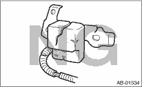
• When checking the airbag system, be sure to use a digital circuit tester. Use of an analog circuit tester may cause the airbag to activate erroneously due to a minimal current inside tester.
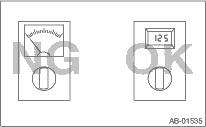
• When checking, use a test harness (1). Damage to connector terminal cause malfunction. Do not directly apply the tester probe to connector terminal of airbag.
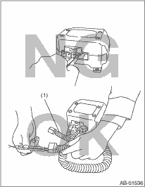
• Do not check continuity of the airbag modules for driver’s side, passenger’s side, or pretensioner.
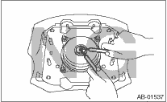
• Do not drop the airbag module parts, subject them to high temperature of 93°C (199°F) or more, or come into contact with water, oil or grease; the internal parts may become damaged and/or reliability may be greatly lowered.
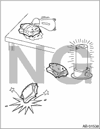
• If damage, open circuit or rust is found on airbag system wiring harness, do not use a soldering equipment to repair. Replace the faulty harness with a new genuine part.
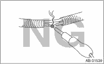
• Do not allow water or oil to come in contact with the connector terminals. Also, do not touch the connector terminals.
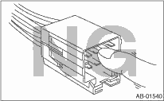
• Either of the airbag modules for driver’s, passenger’s and side or the pretensioner must not be disassembled.
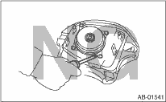
• The removed front seat with airbag module must be kept at least 200 mm (8 in) away from walls and other objects.
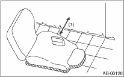
|
(1) |
200 mm (8 in) or more |
• Do not use the airbag or pretensioner parts from other vehicles. Always replace the defective parts with new parts.
• Never reuse a deployed airbag and pretensioner.
• When painting or performing sheet metal work on the front part of the vehicle, including the front wheel apron, front fender and front side frame, remove the front sub sensors and wiring harness of airbag system.
• When painting or performing sheet metal work on the side of the vehicle, including the side sill, center pillar and front and rear doors, remove the side airbag sensors and wiring harness of the airbag system.
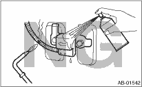
• Do not discard the uninflated airbag or pretensioner.
• After removal of each parts for airbag system, keep them with the pad facing upward on a dry, clean and flat surface without heat, light sources, moisture and dust.
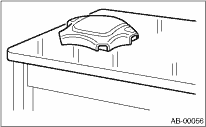
• When airbag control module, front sub sensor and side airbag sensor are removed, be careful not to reuse the bolts and nuts for them. Always use new bolts and nuts for them.
• When storing a removed airbag module, do not place with the airbag pad side facing downward. Do not place any object on the airbag module. Do not stack them on top of each other. If the airbag module pad contacts with any other object, it could cause a serious accident if the airbag inflates for some reason.
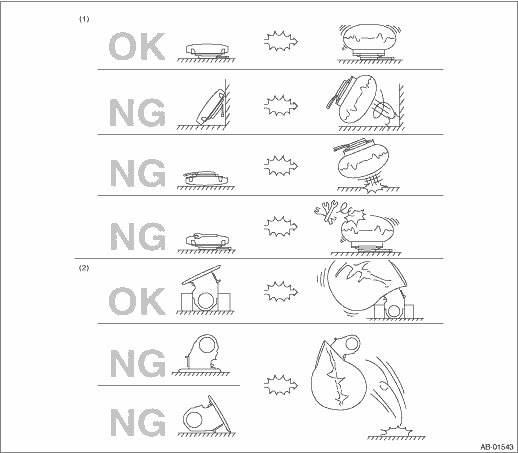
|
(1) |
Driver’s airbag module |
(2) |
Passenger’s airbag module |
||